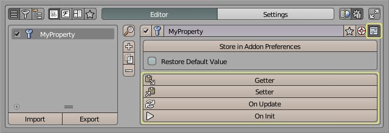
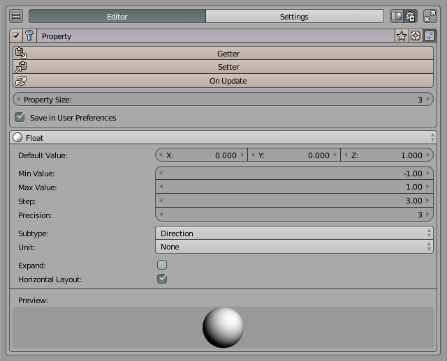
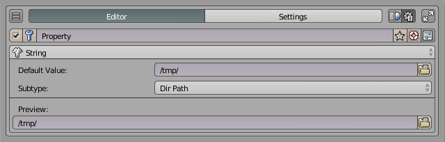

Warning
This is a simple port from the original documentation. It will be improved in the future.
Property Editor
The editor allows you to register new Properties without coding.
Supported Property Types
BoolProperty
IntProperty
FloatProperty
StringProperty
EnumProperty
Vector properties
Usage
Storing Values
By default PME stores property values in Add-on Preferences. If you want to store some custom data in .blend files you need to assign the property to some type.
For example, if you assign MyProperty to Object type, the data will be stored in .blend files for each object in the scene:

Now you can use MyProperty like any other Object’s property:
C.object.MyProperty = True
Functions

Scripting
To get the value of the Property by its name use props() function:
value = props("MyProperty")
value = props().MyProperty
To set the value use:
props("MyProperty", value)
props().MyProperty = value
Custom tab usage example:
L.prop(props(), "MyBoolProperty", text=slot, icon='COLOR_GREEN' if props("MyBoolProperty") else 'COLOR_RED')
Examples
Slider

Color Widget

Direction Widget

Icon-Only Tab Bar

Directory Path
